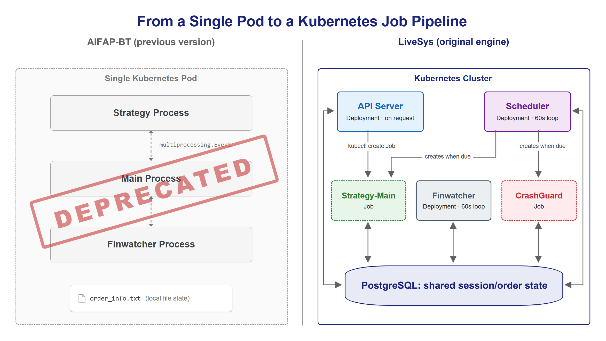
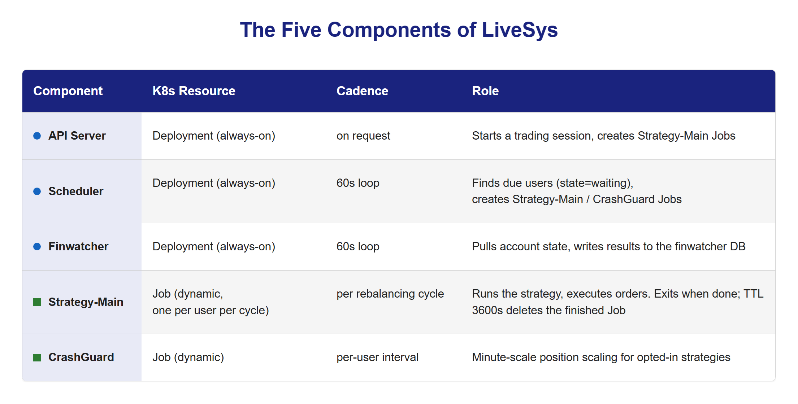
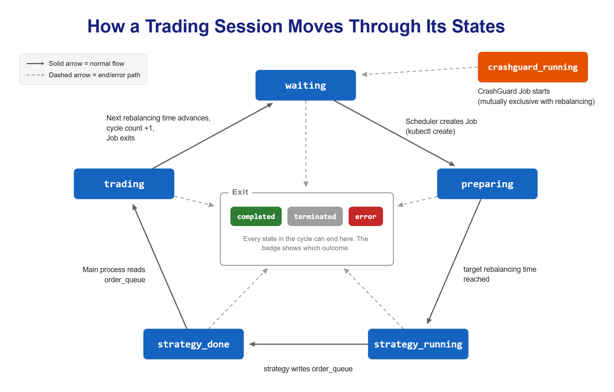
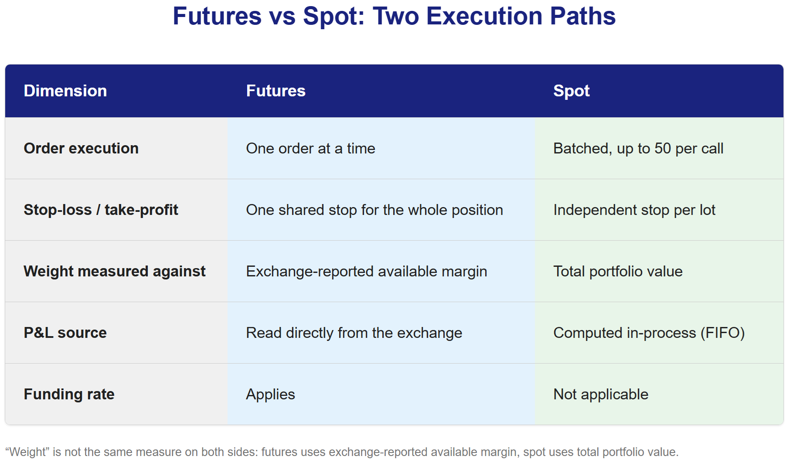
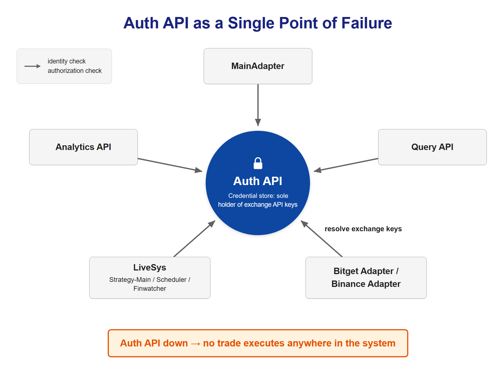

Netflix built a tool to kill its own servers at random, so nothing could depend on one. Our old trading engine passed real orders through a text file.
In 2010, Netflix wrote, "The best way to avoid failure is to fail constantly," and built Chaos Monkey, a program that randomly kills its own servers.
Our old trading engine was the opposite. Three processes shared one Kubernetes Pod and handed orders to each other through a text file on its disk, so when the Pod died mid-cycle, the state of a real trading account died with it. This post is about rebuilding it so that killing any piece is boring, and about the one piece we made impossible to replace.
A monkey hanging from an electrical cable in Shimla, India. Photo: Adam Jones from Kelowna, BC, Canada, CC BY-SA 2.0, via Wikimedia Commons.

What the Old Engine Did
We're Axiom, the team that builds and runs this trading system. The part that touches real money is LiveSys, our live automated trading engine. This post describes the engine as it ran production for most of its life, built around one exchange account running one strategy. A newer core, Compositor, has since taken over production, and the next post covers it.
Strip away the infrastructure and the engine did something simple: a user uploaded a trading strategy, the engine ran it on a schedule, compared the strategy's target portfolio weights against what was held on the exchange, and placed the orders needed to close the gap. Then it watched the account, logged what happened, and did it again next cycle.
That engine traded on Bitget. None of what follows depends on the exchange. It's about how the engine that ran those cycles was built, not which exchange it was pointed at.
Why the Old Model Had to Go
Netflix learned this lesson in 2010. In its own data centers, it said, "session-based memory management was a fine approach, because any single hardware instance failure was rare." In the cloud, that stopped being safe, so Netflix made failure constant. Chaos Monkey randomly kills instances and services in its own architecture, and if anything still depended on one particular machine staying alive, the monkey would find out before a real failure did.
The previous version of this system, internally called AIFAP-BT (AI Finance Agent Platform – Bitget), ran as a single Kubernetes Pod that spawned three separate OS processes with subprocess.Popen: one for the strategy, one for order execution ("Main"), one for monitoring ("Finwatcher"). The three talked to each other with multiprocessing.Event signals, and the handoff between the strategy process and the execution process went through a local file, order_info.txt.
It worked, but it had the failure mode you'd expect from any system where state lives in a process's memory and a file on a Pod's local disk: if the Pod died mid-cycle, the state died with it. Kubernetes designs Pods to be disposable, so a Pod dying mid-cycle was never an edge case. There was no clean way to ask "what is this account doing right now?" from outside the Pod, and no natural place to plug in a second kind of scheduled job (like a crash-scaling routine) without adding a fourth process to the same subprocess soup.
The rebuild replaced all of that with two ideas. First, every unit of work was either a Kubernetes Job (runs once, terminates) or a long-running Deployment (never terminates). Nothing was a bare subprocess anymore. Second, all state lived in the finplatform Postgres database, specifically three tables: active_sessions, order_queue, and job_history. A Pod could die and be replaced by a new one, and the system still knew exactly which state a given user's trading cycle was in, because that state was never inside the Pod to begin with. This is a formalized industry principle: the Twelve-Factor App methodology says processes are stateless and share nothing, and its disposability principle holds that a process should be replaceable at any moment without anything depending on it staying alive. The old file-and-memory model never had that property. The Job-plus-database model did.

Five Components, One Postgres Database
The rebuilt engine was five pieces of Kubernetes working off the same three database tables:
- API Server: a Deployment, always running. It handled requests to start a trading session and created Strategy-Main Jobs on demand.
- Scheduler: a Deployment, always running, looping every 60 seconds. It found users whose state was
waitingand due for their next cycle, and created the Strategy-Main (or CrashGuard) Job for them. - Strategy-Main: a Job, created dynamically, one per user per cycle. This is where the actual strategy ran and orders got placed. It exited when its work was done, and a TTL of 3600 seconds removed the finished Job object an hour later.
- Finwatcher: a Deployment, always running, looping every 60 seconds. It pulled each account's current state from the exchange and wrote results into the separate
finwatcherdatabase. - CrashGuard: a Job, created dynamically on a per-user interval, for accounts whose strategy opted into minute-scale position scaling.
Nothing here was a bare OS subprocess. Deployments stayed up and looped; Jobs spun up, did one unit of work, and exited. That last part mattered operationally: once a Strategy-Main Job finished, successfully or not, its TTL cleared the finished Job object out on its own. Nobody had to remember to go delete a stale one. The TTL was a cleanup timer for Jobs that had already ended. It did not stop a Job that was still running.

Inside a Rebalancing Cycle: The State Machine
Every session lived in a small state machine, and one row in active_sessions said which state it was in. Here's what happened when a cycle ran, end to end.
A cycle started when a run request came in. The API Server checked auth, validated the uploaded config, checked a resume guard (reject the request if this user was already running), and then upserted a row in active_sessions with state='waiting'. Immediately after that, it issued a kubectl create for that user's Strategy-Main Job.
From there, the Job itself drove the rest of the transitions. It set state='preparing' first. From that moment the Scheduler, which only picked up sessions in waiting, skipped this user on its next 60-second tick. It waited for any running CrashGuard Job to clear, then waited until the target rebalancing time arrived. Then:
state='strategy_running': the uploaded strategy executed and wrote its orders toorder_queue.state='strategy_done': the strategy's work was finished and its orders were waiting inorder_queue.state='trading': Main readorder_queueand executed the actual orders against the exchange.- On completion,
nextRebalancingTimeadvanced,totalCyclesincremented by one, andstatereturned towaiting. The Job then exited, its TTL removed the finished Job object an hour later, and the Scheduler created the next Job when this user was next due.
The delicate moment was the gap before preparing: the Job existed, but the row still said waiting. Three things covered it. Before creating a Job, the Scheduler looked for a Job record for the same user from the last few minutes. It also checked that a recorded Job's pod actually existed, so a record whose pod never appeared couldn't block a user forever. And a lock kept the two Scheduler replicas from working the same tick at once. What wasn't there was an atomic claim on the session row, so the protection was layered rather than absolute. The order logic was built so that a rare duplicate wasn't catastrophic: every cycle computed its orders as the difference between the target and what the exchange reported holding right now, so running a cycle twice in a row didn't stack a position. The operation was idempotent in effect. Two cycles running at the very same moment could still overlap, and that was a gap the design accepted rather than closed. The engine that replaced it closed the gap: the Scheduler takes an atomic claim on the session row before it creates the Job.
The full set of states a session could be in was: waiting, preparing, strategy_running, strategy_done, trading, crashguard_running, completed, terminated, error. The last three were the exit states, and the error policy was deliberately tiered: a user error on a brand-new session (first cycle) triggered liquidation and session termination, since there was no track record yet to preserve. A user error on a session that had already run several cycles kept the session alive and just notified the user. A bad cycle didn't have to mean tearing down a working strategy. A system-level error (not the user's code) also kept the session alive, but paged an admin instead.
That asymmetry didn't ship this way on the first attempt. It went through three revisions. The earliest version terminated every unrecoverable error unconditionally, which meant a transient exchange hiccup and a genuinely broken strategy got the same treatment. A user had to manually resume a session that never should have stopped. The next pass narrowed automatic liquidation down to a short list of specific triggers (a user manually terminating, a session hitting its end time, one of the monitoring detectors firing) and left everything else to notify rather than kill, on the reasoning that users trust the system with real money specifically because it isn't supposed to just stop. That reasoning almost went too far the other way: if every user error just got a notification, a strategy that was broken from cycle one would sit there retrying forever instead of ever getting cut off. The fix that stuck split on one number: totalCycles. An unrecoverable error liquidated and terminated only when it hit a session that had never completed a single successful cycle. The same error on a session with a track record kept it alive for the next attempt instead. Trust the money you've already run for. Don't let a strategy that never worked keep trying forever. The engine that replaced this one went a step further and dropped liquidation on error entirely: a failed cycle is skipped, the session stays up, and the user is notified.
Concretely, a Strategy-Main Job looked roughly like this:
apiVersion: batch/v1
kind: Job
metadata:
name: st-<user_id>-<timestamp> # second-resolution timestamp, so the name is not a deduplication key
spec:
backoffLimit: 0 # a failed cycle is not retried inside the Job
activeDeadlineSeconds: <wait + interval + margin> # the actual runtime limit
ttlSecondsAfterFinished: 3600 # only deletes the finished Job object an hour later; cleanup, not a limit
template:
spec:
containers:
- name: strategy-main
image: strategy-main:<tag>
restartPolicy: NeverThe deadline is what stopped a Job that ran long: it allowed the wait until the target time, plus one rebalancing interval, plus a ten-minute margin. The important detail isn't the YAML itself. It's that nothing about this Job's identity depended on a process staying alive on a specific node. If the node disappeared, the Job's outcome was already recorded as a state transition in Postgres, safely outside any variable that would vanish with it.

Futures vs. Spot: One System, Two Execution Paths
The old engine treated futures and spot trading as genuinely different execution paths, not a thin wrapper over the same code: different order placement, different risk controls, different accounting. Five things diverged:
- Order execution. The engine sent futures orders one at a time and batched spot orders, up to 50 per exchange call.
- Stop-loss / take-profit. A futures account carried exactly one stop-loss/take-profit for its whole position. Setting a new one replaced whatever was there before. Spot set an independent stop per lot, so closing one didn't touch the others.
- Position weight. Measured against a different denominator on each side. See below.
- P&L. Futures read it straight from the exchange. Spot computed it itself, because the exchange doesn't hand it over.
- Funding rate. Applied to futures, had no equivalent on spot.
The weight formulas looked almost identical until you looked at what "allocated balance" actually meant on each side. It wasn't the same number:
Spot: weight against the account's total value:
allocated balance = total portfolio value × target allocation
weight = (quantity held × market price) / allocated balance
Futures: weight against exchange-reported available margin:
allocated balance = available margin × target allocation
margin = (average entry price × position size) / leverage
weight = margin / allocated balance
Spot weight was a share of the account's total mark-to-market value. Futures weight was a share of exchange-reported available balance, and the numerator was margin: notional divided by leverage, never the position's face value. Two strategies each reporting "40% weight" weren't necessarily sized the same way relative to the account if one was spot and one was futures. The same word hid two different denominators.
The FIFO calculation behind spot's P&L was a plain queue, kept in memory per symbol and rebuilt from trade history on cold start:
# Spot P&L: FIFO over buy fills, replayed on each sell fill
for fill in fills:
if fill.side == "buy":
positions.append({"size": fill.size, "price": fill.price})
elif fill.side == "sell":
remaining = fill.size
while remaining > 0 and positions:
oldest = positions.popleft()
matched = min(oldest["size"], remaining)
net_profit += matched * (fill.price - oldest["price"])
remaining -= matched
if oldest["size"] > matched:
oldest["size"] -= matched
positions.appendleft(oldest)Futures skipped all of this because Bitget hands back a profit field on every fill and the engine just summed it (netprofit = profit + fee). Spot got no such field from the exchange, so the FIFO queue above stood in for accounting the exchange itself won't do. That design had a real cost: it lived in process memory rather than the database, so a cold start meant replaying trade history from scratch before the numbers were trustworthy again.
None of this was exposed to the strategy author. From the user's side, you wrote one strategy(data, config_dict) function. The futures/spot split lived entirely in the execution layer underneath it.

CrashGuard: The Emergency Brake
CrashGuard was opt-in: a strategy got it only if two conditions were both true: the uploaded strategy file defined a crashguard(data, positions, config_dict) function, and the uploaded config YAML had a crashguard section. If either was missing, the account simply never got a CrashGuard Job.
# A strategy opts into CrashGuard by defining this function.
# LiveSys only calls it if the uploaded config also has a
# `crashguard:` section — otherwise this function is just ignored.
def crashguard(data, positions, config_dict):
# data: latest market data available to the account
# positions: this account's current open positions
# config_dict: the "crashguard" block of the uploaded YAML
...When it ran, CrashGuard was a Job created on a per-user interval that operated at minute-scale, much faster than a normal rebalancing cycle, and it placed real scale-down orders against the account. It was mutually exclusive with the regular rebalancing Job for the same user: whichever one started first blocked the other from starting, which is exactly why crashguard_running sat alongside the rebalancing states in the state machine, never layered on top of them.
The scheduling question underneath it (when, exactly, should the next CrashGuard interval fire) went through several rounds of redesign before landing there. The lesson that stuck: schedule the next interval off the target time, never off however late the last run finished. Anchor to "last actual run plus interval" and a slow cycle drags every following cycle later with it; anchor to "target time plus interval" and a single slow run doesn't compound. This distinction has a name in scheduling libraries generally: Java's own concurrency documentation draws exactly this line between scheduling at a fixed rate (anchored to the original schedule) and scheduling with a fixed delay (anchored to when the last run finished), and only the first one avoids drift.
One honest note for readers who might see this component again later in the series: CrashGuard does not exist in Compositor, which now carries production. That's a deliberate consequence of its multi-strategy model. The next post covers it.
Watching the Watchers: Monitoring and Alerts
Finwatcher, the always-on Deployment that ran every 60 seconds, was the engine's own monitoring layer. For every user currently trading it checked four things in a fixed order: sessions still marked as running after they had finished, losses past the limit that user set, deposits and withdrawals, and risk indicators like max drawdown crossing the alert thresholds the user configured. It then stacked the futures and spot results, per account and per portfolio, into the separate finwatcher Postgres database. A write skipped anything already recorded for the same timestamp (ON CONFLICT DO NOTHING), so a re-run or a retry didn't double-count.
When something needed a human, alerts went out over two channels: Discord (an admin DM plus the relevant user's team channel or DM) and email. On the visualization side, LiveSys ran two dashboards side by side: Grafana JSON dashboards covering candles, trades, logs, and portfolio views, and a self-hosted HTML dashboard (a portfolio view and a per-strategy grid) served directly by the API pod. That HTML dashboard isn't a side project. It's the early groundwork for the dashboard approach that gets expanded significantly in that newer architecture, which a later post takes up.
The Single Point of Failure We Chose on Purpose
Everything above is built to be replaced. One thing is not.
MainAdapter, the single routing service every order passes through on its way to an exchange, the Bitget and Binance exchange adapters behind it, and LiveSys's own API all fall into the same bucket: every one of them re-verifies identity against a separate Auth API on essentially every request. Auth API is also the sole holder of exchange API keys: the exchange adapters resolve them from it right before they need to sign a request. Nothing downstream caches a long-lived credential. Everything asks Auth API, every time.
That design has an obvious consequence worth stating plainly, without glossing over it: Auth API is a single point of failure by design. If it goes down, no trade can execute anywhere in the system, both within LiveSys and across every service that depends on it. We think that's a reasonable tradeoff for a system whose entire job is custody of exchange credentials: centralizing key custody in one auditable, re-verified-on-every-call service is a defensible security posture, and the alternative (caching credentials or trust decisions in multiple places) trades a clean outage for a much harder-to-reason-about failure mode. It is a tradeoff, still, and it's the kind of architectural honesty this series is trying to keep: know what you're centralizing, and know exactly what breaks if it's down.
We are not the first to find out what a central identity check costs. In December 2020, a quota system wrongly reported the usage of Google's user ID service as zero, automation cut the quota to match, and for 47 minutes services that needed Google sign-in were unavailable.
It happened to us once too. Internal DNS resolution started failing intermittently in the cluster: Auth API's own requests started timing out, and every service downstream of it (the exchange execution layer, the monitoring stack, the alerting integration) went down with it in the same few minutes, in a chain. What made it a slower diagnosis than it should have been is where the failure showed up: the application logs just said a field was missing from a response, which reads like an API contract bug on the surface. The real cause was several layers further down, in how the cluster's network stack was sized for DNS traffic. Meta's postmortem of its 2021 outage describes the same trap at a larger scale: losing DNS broke many of the internal tools it would normally use to investigate. Nobody had to guess whether the SPOF tradeoff was real after that. The blast radius matched the design on paper exactly.

Two Namespaces, One Database
Operationally, the engine was split across two Kubernetes namespaces. One held the long-running infrastructure: API Server, Auth API, Discord integration, the database, Scheduler, and Finwatcher. The other held the per-user Job workloads (Strategy-Main, CrashGuard), which got TTL-cleaned automatically once they finished. A separate test namespace existed so that changes got exercised there before anything reached the production branch.
Every build is tagged with its version and the exact commit it was built from, and production builds and test builds are tagged distinctly. It's a small detail, but it's what makes "which exact build is running in prod right now" an answerable question instead of a guess.
That same instinct, making state legible, is really the throughline of this entire rewrite. The old model's biggest weakness wasn't that it was slow or that it crashed. It's that when it did crash, nobody could say with confidence what state a given account was left in without SSHing into a Pod that might not even exist anymore. The rebuild traded some infrastructure complexity (five components, a real state machine replacing the old event flag) for the ability to answer that question from a database query, every time.
If you're reading this as an investor rather than an engineer, this is the part that matters: a live trading engine where "what is my account doing right now" always has an answer, and the answer is a database row, not a guess about which machine is still alive. Netflix built a monkey to prove that nothing depends on any one server. We wrote the state down where losing a Pod can't take it.
What's Next in This Series
This is the system as it ran in production, on real accounts. It was also, deliberately, not the end state: the rebuild that replaced it breaks the single-strategy assumption baked into everything described above. Its base architecture is Compositor, which now carries production. The next post covers what that rewrite changes and why. From there, this series tours the trading API layer that sits behind every order LiveSys places, looks at how strategies get validated before they ever reach a system like this one, and gives an honest account of how (and how much) the live and backtest pipelines currently connect.
Sources
- Ciancutti, J. (2010). "5 Lessons We've Learned Using AWS." Netflix Tech Blog, via the Internet Archive. Link
- Kubernetes. "Pods." Kubernetes documentation. Link
- Kubernetes. "Jobs." Kubernetes documentation. Link
- Wiggins, A. (2011). "Processes." The Twelve-Factor App. Link
- Wiggins, A. (2011). "Disposability." The Twelve-Factor App. Link
- Python Software Foundation.
subprocessandmultiprocessing, Python 3 documentation. Link - Harel, D. (1987). "Statecharts: A Visual Formalism for Complex Systems." Science of Computer Programming 8(3), 231-274. Link
- Helland, P. (2012). "Idempotence Is Not a Medical Condition." ACM Queue 10(4), via the Internet Archive. Link
- Bitget. "What is the funding rate?" Bitget Help Center. Link
- Bitget. "Batch Place Orders" (
orderList, maximum length 50), Classic Spot Trade API. Link - PostgreSQL Global Development Group. "INSERT," PostgreSQL documentation. Link
- Google Cloud. "Incident #20013," Google Cloud Service Health, December 2020. Link
- Janardhan, S. (2021). "More details about the October 4 outage." Engineering at Meta. Link
- Oracle. "ScheduledExecutorService," Java SE 8 API documentation. Link